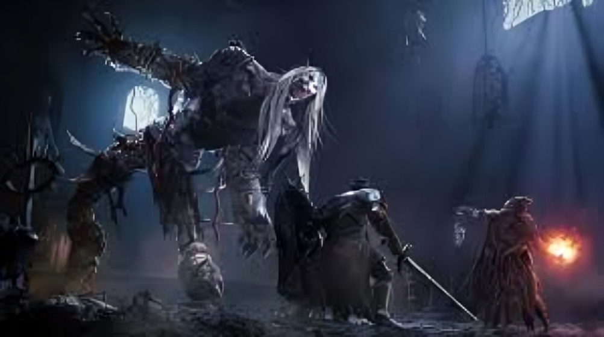
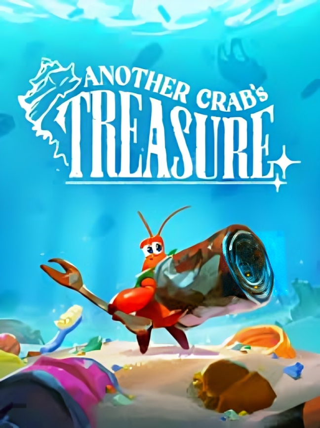
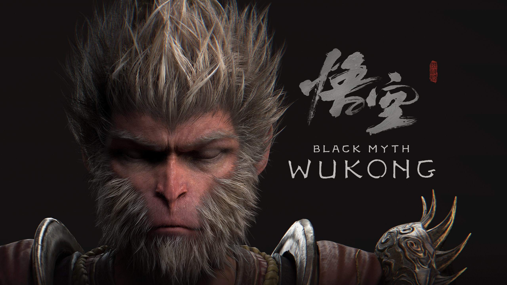

Lords of the Fallen is an action role-playing video game played from a third-person perspective. Like its predecessor, players can use both melee weapons and magic to defeat enemies, and the game's gameplay and combat system adopted elements from Soulslike games.
Play here!
Another Crab's Treasur: e

Another Crab's Treasure is a Soulslike action-adventure video game played from a third-person perspective. The player controls Kril, a hermit crab stripped of his protective shell. Shells function as Kril's armor, granting defensive capabilities, statistics, and even unique abilities.
Play here!

Black Myth: Wukong is an action role-playing game. It has elements characteristic to the Soulslike subgenre. The game is played in single-player mode from a third-person perspective. The player controls the Destined One, a monkey protagonist based on Sun Wukong from the Journey to the West.
Play here!